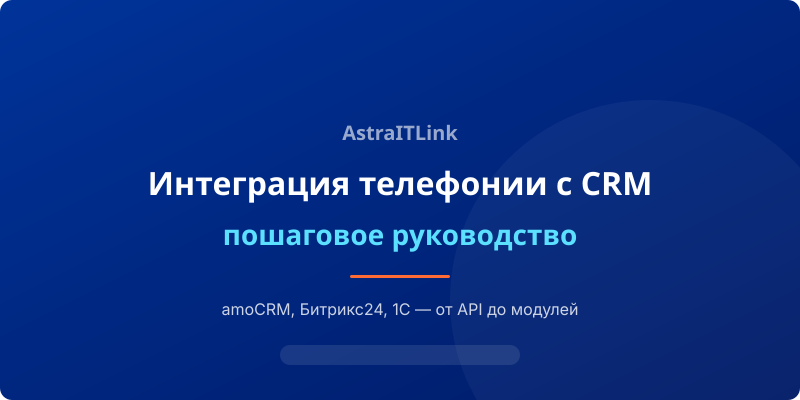

Интеграция телефонии с CRM — один из самых эффективных способов повысить продажи и качество обслуживания. Когда менеджер видит карточку клиента до того, как поднял трубку, конверсия растёт на 20–30%. Разберём пошаговый процесс настройки.
Шаг 1. Выбор способа интеграции
Существует три основных подхода:
- Виджет CRM — готовый модуль, который устанавливается в интерфейс CRM. Подходит для amoCRM и Битрикс24.
- API-интеграция — прямое соединение Asterisk с CRM через REST API. Даёт максимальную гибкость.
- Webhook — Asterisk отправляет HTTP-запросы в CRM при событиях (звонок, завершение).
Шаг 2. Настройка Asterisk
Вам потребуется настроить AMI (Asterisk Manager Interface) для внешнего управления, а также CDR (Call Detail Records) для получения данных о звонках. Пример базовой конфигурации:
Убедитесь, что в /etc/asterisk/manager.conf включён доступ, настроен cdr.conf для записи CDR в базу данных и настроен ARI для интеграции.
Шаг 3. Установка модуля CRM
Для amoCRM установите готовый виджет из маркетплейса или используйте наше API-решение. Для Битрикс24 — модуль из Market. Для 1С потребуется написание коннектора через HTTP-сервисы.
После установки укажите данные вашего сервера Asterisk (IP, порт, логин, пароль AMI). Проверьте соединение.
Шаг 4. Настройка сценариев
Определите, какие действия должны происходить при звонке:
- При входящем звонке — поиск номера в CRM и открытие карточки
- Автоматическое создание сделки при первом звонке
- Запись разговора и прикрепление к карточке
- Автообзвон по сценариям (для ретеншн)
Шаг 5. Тестирование и запуск
Проверьте все сценарии: входящий звонок с существующего и нового номера, исходящий звонок, перевод, трёхсторонняя конференция. Убедитесь, что записи загружаются в CRM.
После внедрения вы получите единую экосистему, где каждый звонок становится частью клиентской истории. Наша команда помогает с интеграцией любого уровня сложности — от виджета до полного кастомного решения.